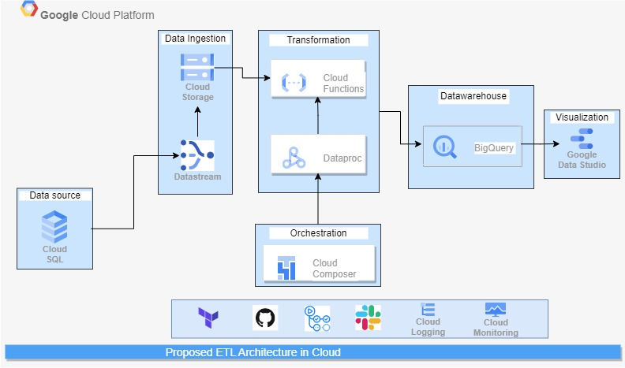

ETL - Data ingestion from dynamoDB to Redshift
In this architecture, the assumed scenerio was a gaming data and the following tools/services were used:
- Lambda Function
- Amason S3
- Athena
- Quicksight
- AWS Glue Databrew
- SNS
- AWS Glue ETL Job
- Amazon Redshift
The data was ingested from DynamoDB to Redhsift(batch process). A lambda function
was invoked on Amazon S3 bucket so that whenever there is a new update, insert or delete in the
dynamoDB, the lambda function will trigger and replicate the data into S3 raw data bucket.
Then, another Lambda function was invoked on the S3 raw data bucket to run AWS step function to
orchestrate the data process and transformation. Glue Databrew is used for profiling and checking
for data quality, the cleaned data will be stored on another S3 bucket. SNS will be used for
notification in case there is any failure in the data quality checks.
The AWS Glue Job is used for transforming the data to meet up with the end user use-case and the
data will be finally ingested into Redshift (data warehouse). All this process are run on Step Function
in other to orchestrate and monitor our workflow.
Streaming data from neo4j to Redshift
In this architecture, the assumed scenerio was a gaming data (streaming) and the following tools/services were used:
- Lambda Function
- Amason Kinesis Firehose
- Amason S3
- Eventbridge
- Secrets Manager
- Amazon Kinesis Data Analytics
- AWS Glue Databrew
- SNS
- Amazon Redshift
The data was streamed using Amazon Kinesis Data Firehouse from the
assumed neo4j database that is running on Elastic Kubernete Service(EKS). A lambda function was
invoked on kinesis data firehose to deliver the streamed data into S3 raw bucket.
From S3 raw bucket, lambda function and eventbridge was used to trigger step function which will
serve as an orchestration workflow to run Kinesis Data Analytics to perform analysis, AWS Glue
Databrew was used to perform data profiling and data quality checks on the S3 curated bucket and
when the DQ rules(for data quality checks) and data profiling successfully passes, the cleaned data will be sent to the
Amazon Redhift(data warehouse) and if otherwise a notification will be sent to the data engineer to
check for errors or perform data enrichment.

ETL pipeline using on-prem database
The purpose of this project is to perform data enrichment so that the total profit
made on all car sales can be calculated. This diagram contains an ETL pipeline for performing data enrichment,
the data source which are the CSV files. Surrogate keys were introduced into the data as the data was loaded into database
in other to have unique records. I use docker, airflow and postgres. Docker was used to dockerize airflow and postgres,
Airflow for orchestrating and scheduling the jobs(there were seven tasks all together).
I used postgres as the database and docker for containerising the application.
The code can be found here: Link to repo

ETL pipeline using google cloud platform
This is a proposed architecture for deploying figure 3 into cloud as the project was tested on on-prem database using pgAdmin